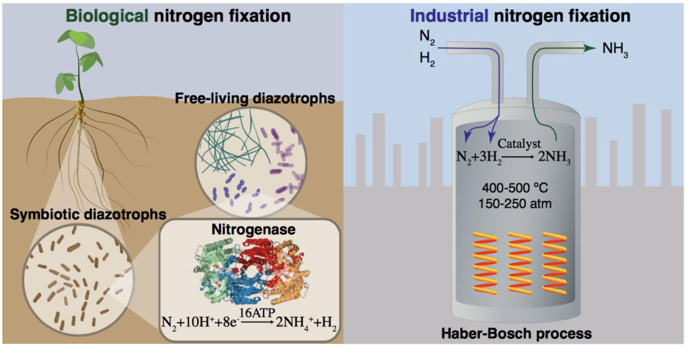

Self-fertilizing crops reduce need for synthetic fertilizer
Over the last century, the incredible rise in crop yields has been largely powered by the application of synthetic nitrogen fertilizer created from the Haber-Bosch process. Access to synthetic fertilizer is uneven around the world, with farmers in some of the world’s poorest countries lacking the funds and equipment to deploy nitrogen fertilizer. In addition, the over-application of synthetic fertilizer in wealthy nations, such as the United States, has led to water pollution, algal blooms, and ocean dead spots.
Biotechnology offers an answer. Some plants, specifically legumes (which include soy and clover) draw nitrogen from the atmosphere with the help of symbiotic root bacteria.
Nitrogen fixation can be done by either biology or industrial processes. Source: Brookhaven National Laboratory
In the coming decades, researchers will develop ways to introduce this capability to wheat, rice, corn, and other staple crops. The result will be more food production on the same land, especially in the developing world, without the carbon emissions, nitrogen runoff, and water pollution that come from synthetic fertilizer application.